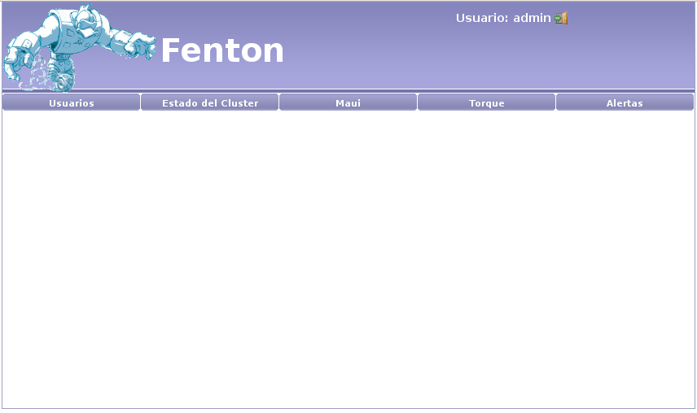

Inicialmente al administrador se le presentarán las opciones por categorías:
- Usuarios: manejo de usuarios, clientes y trabajos.
- Estado del cluster: interfaz con Ganglia.
- Ganglia permite monitorear el estado de los nodos del cluster y consultar
la disponibilidad de recursos (memoria, procesador, etc.)
- Maui: interfaz con Maui.
- Maui se encarga de despachar los trabajos en la cola de ejecución
del sistema evaluando diferentes propiedades (prioridad del trabajo,
recursos necesarios para la ejecución, etc.).
- Torque: interfaz con Torque.
- Torque es quien administra los recursos disponibles del sistema y
es el encargado de iniciar la ejecución de un trabajo cuando Maui
se lo ordena.
- Alertas: acceso a las alertas recibidas.
Santiago Iturriaga
2008-05-26